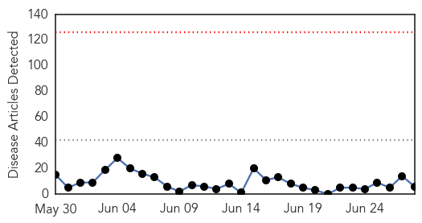
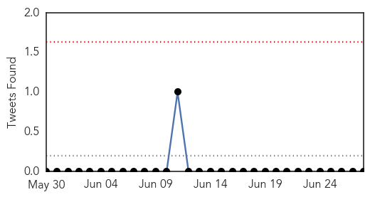
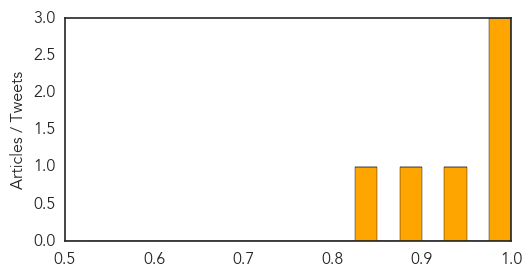
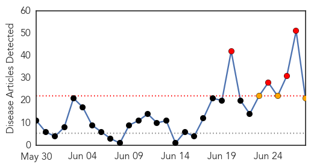
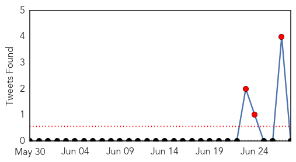
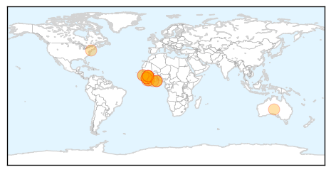
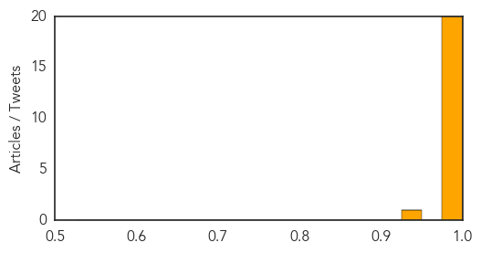

MERS
30-Day Web Trend
0 alerts, 0 warnings

30-Day Twitter Trend
0 alerts, 0 warnings

Article Locations

Article Confidences
Top Articles:
- 0.999
- Mers emerging health concern
- 0.993
- Saudi Arabia reports increase in MERS cases
- 0.980
- Camels imports are linked to deadly Mers virus
- 0.947
- Camel imports spreading Mers virus – S. Arabia
- 0.875
- Saudi Arabia suspects African camel imports in MERS outbreak
- 0.843
- Killer virus ‘made leap from camels to humans’
Top Tweets:
-
No tweets found for Jun 28, 2014
Ebola
30-Day Web Trend
4 alerts, 3 warnings

30-Day Twitter Trend
5 alerts, 0 warnings

Article Locations
Article Confidences
Top Articles:
- 1.000
- Ebola Outbreak Now Most Deadly Ever in West Africa
- 1.000
- Ebola outbreak now most deadly ever in West Africa
- 1.000
- WHO warns West Africa countries of Ebola spread
- 1.000
- West African nations should be prepared for Ebola: WHO expert
- 1.000
- Could the new Ebola outbreak spread from Africa to the U.S. or Europe?
- 1.000
- West Africa Ebola Epidemic "Out Of Control"
- 1.000
- West Africa Ebola outbreak becoming widespread
- 1.000
- Ebola challenges West African countries as WHO ramps up response
- 1.000
- Ebola challenges West African countries - WHO
- 1.000
- Could Ebola Spread to the United States?
- 1.000
- Farsnews
- 0.999
- Drastic action needed to contain Ebola
- 0.999
- WHO denies Ebola outbreak out of hand
- 0.999
- WHO to hold meeting on Ebola in Accra
- 0.998
- Risk of Ebola spread in West Africa, WHO warns
- 0.998
- Liberia ebola outbreak: Pastors being urged not to rely on faith alone to heal the sick
- 0.997
- Sierra Leone government insists WHO reduce Ebola death toll
- 0.995
- Ebola haemorrhagic fever tests on La Fe patient 'negative'
- 0.993
- Researchers Develop Experimental Treatment for Deadly Nipah Virus
- 0.992
- West African nations should be prepared for Ebola - WHO expert
- 0.942
- A Doctor Tries To Save A 9-Year-Old Stricken With Ebola
Top Tweets:
-
No tweets found for Jun 28, 2014